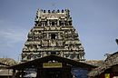

Suryanar Kovil is located to the East of Kumbakonam, 2 km (1.2 mi) from Aduthurai and the Kumbakonam - Mayiladuthurai road. The temple has direct connectivity from lower Anicut and Thiruppanandal. Kanjanoor, the temple for Sukran, is located 3 km (1.9 mi) from Suryanar Kovil in the Aduthurai - Kuthalam road. Thingalur is located 35 km (22 mi) to the west of Kumbakonam in the Kumbakonam - Tiruvvayyaru Road. Vaitheeswaran Kovil is located 50.5 km (31.4 mi) away from Kumbakonam on the Kumbakonam - Sirkazhi Road and 14.5 km (9.0 mi) away from Mayiladuthurai. Swetharanyeswarar Temple is located 24 km (15 mi) from Mayiladuthurai and 13 km (8.1 mi) to the East of Vaitheeswaran Kovil. Ketu Stalam is located close to Poompuhar, 9 km (5.6 mi) to the South of Thiruvenkadu and 23 km (14 mi) to the South West of Vaitheeswarn Kovil. Alangudi is located 18 km (11 mi) to the South of Kumbakonam on the Kumbakonam - Mannargudi road. Rahu Stalam is located 6 km (3.7 mi) to the West of Kumbakonam on the Kumbakonam - Karaikal road and Saniswarar temple is located 46 km (29 mi) further on the same road. Out of the nine temples, six are located on the northern bank of river Kaveri, while the remaining three in the southern bank. Padal petra stalam - where the three of the most revered Nayanars (Saivite Saints), Appar, Sundarar and Tirugnana Sambandar have glorified the temples in Tevaram during the 7th-8th centuries.
| Name of the temple | Deity | Planet | Day | Location | Photo | ||
|---|---|---|---|---|---|---|---|
| Suryanar Kovil | Suryan | Sun | Sunday | Aduthurai |  | ||
| Kailasanathar Temple | Chandran | Moon | Monday | Thingalur | |||
| Vaitheeswaran Koil | Angaragan | Mars | Tuesday | Vaitheeswaran Koil | |||
| Swetharanyeswarar Temple | Budha | Mercury | Wednesday | Tiruvenkadu | |||
| Apatsahayesvarar Temple | Guru | Jupiter | Thursday | Alangudi | |||
| Agniswarar Temple | Sukran | Venus | Friday | Kanjanur | |||
| Tirunallar Saniswaran Temple | Shani | Saturn | Saturday | Karaikal | |||
| Rahu Stalam | Rahu | Lunar ascending Node | Tirunageswaram | ||||
| Nagannathaswamy Temple | Ketu | Lunar decending Node | Keezhaperumpallam |
The Suryanar Kovil was built during the reign of Kulottunga Choladeva (AD 1060-1118) and was called Kulottungachola-Marttandalaya. The current granite shrine is believed to have been built by the Vijayanagara Empire. In modern times, all the temples are maintained and administered by the Hindu Religious and Charitable Endowments Department of the Government of Tamil Nadu. The Suryanar temple is mentioned in the songs of Muthuswami Dikshitar, who has composed a song starting with "Suryamurthe" in Saurashatra ragam. The temple of Thingalur is associated with the legend of Appar bringing back the life of the son of Appoothi Adigal. The idol of moon is made of black granite and clad in pure white. Vaitheeswaran Koil has five inscriptions mainly belonging to the period of Kulothunga Chola I (1070-1120 CE). The inscription on the steps of Subramanya shrine records the shutter of the sluice at Sattainathapuram measures 35 inches in length and 8 inches in breadth. The one on the right of the temple tank indicates the tank, Nachiyar shrine, and its hall were completely renovated when Kanderayar was governing the Sigali Simai, and during the management of the temple by Muthukumaraswami Tambiran, a disciple of Sivagnanadesikar-Sambandar of the Dharmapuram Adheenam. On the wall of the second precinct, the inscriptions state that the courtyard of Thayalnayagi shrine, the sacred steps and Tattisuri hall were built during Tamil year 4868 corresponding to 1689 CE. On the floor near accountant's seat registers a deed granted by Sankarabaragiri Rengopanditar by Ambalavanatambiran, an agent of the temple. The Easter gateway inscription indicates the gift of taxes from Manipallam in Tiruvalipparu.
{kind=link}
{kind=link}
{kind=link}
{kind=link}
{kind=link}
{kind=link}
{kind=link}